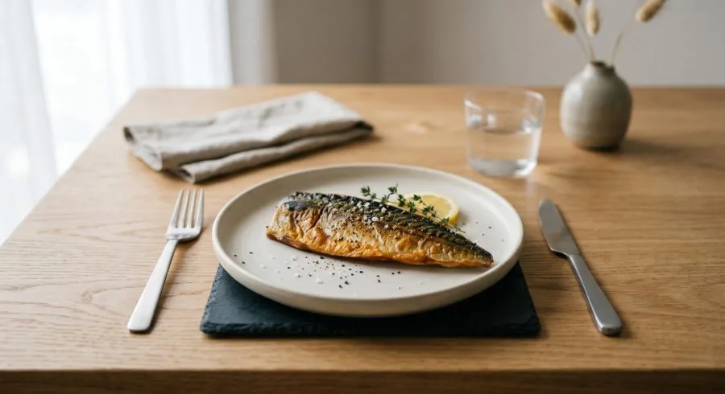

鯖魚斷食，和傳統斷食差在哪裡
 想試試斷食？來玩「空腹小雞」跟思思醫師一起斷食，順便養一隻小雞。手機打開就能玩。來養小雞 →
想試試斷食？來玩「空腹小雞」跟思思醫師一起斷食，順便養一隻小雞。手機打開就能玩。來養小雞 →

如果有人告訴你，斷食期間可以吃東西，而且在某些方面甚至比完全不吃更有效，你的第一反應大概是：這不就是在自欺欺人嗎？
這個問題，我也問過自己。認真研究機制之後，我的答案是：沙丁魚斷食（或鯖魚斷食）是一種邏輯完全不同的代謝策略。它有真實的、值得認真看待的優勢，但也有一些傳統斷食才能達到的效果它確實無法複製。把這兩件事搞清楚，才知道自己在做什麼，以及值不值得做。
在台灣，沙丁魚比較難買，鯖魚在超市和傳統市場都很常見，罐頭也很好取得。兩者的代謝機制相近，鯖魚的 Omega-3 含量甚至更高，是完全可以互換的替代品。
概念很簡單
沙丁魚斷食的做法是：在幾天的時間裡，只吃罐頭沙丁魚或鯖魚，其餘食物全部暫停。水、無糖茶、黑咖啡可以繼續喝。碳水化合物、糖、加工食品一律不碰。不需要限制每次吃多少，餓了就吃。
這個方法最早是美國內科醫師 Annette Bosworth（網路上大家叫她 Dr. Boz）在 2023 年提出來的。她的核心觀點是：沙丁魚的特殊營養組合，能讓身體進入一種接近斷食的代謝狀態，同時繞過傳統斷食最難克服的幾個障礙，包括強烈的飢餓感、肌肉流失，以及需要極大意志力才能撐過去的折磨感。
Nick Norwitz 的 30 天實驗
把這個方法推到極端來測試的，是哈佛醫學院畢業、牛津大學代謝研究博士 Nick Norwitz。2025 年 10 月，他連續 30 天每天只吃沙丁魚，總共吃了大約 1,000 隻。
結果讓他自己都感到驚訝。體重下降 2.7 公斤，體脂降到 7%，但肌肉量幾乎沒有流失。他的 Omega-3 指數高出測量儀器的正常上限 2.7%，他說自己「看起來比較像海豚而不是人類」。能量維持得很好，整個實驗期間他繼續正常工作和訓練。更值得注意的是，他的身體啟動了 FGF-21，一種被稱為「代謝轉換激素」的訊號分子，它能增強脂肪燃燒、改善胰島素敏感性，而這個激素在傳統斷食中也會出現，說明兩種策略在某些代謝路徑上是重疊的。
這當然不是隨機對照試驗，單一案例的結論需要謹慎解讀。但 Norwitz 作為代謝研究者，他的自體實驗有完整的追蹤數據，提供了一個有參考價值的觀察窗口。
為什麼鯖魚有這個效果？
關鍵在於鯖魚極為特殊的營養組合：高蛋白、高 Omega-3、近乎零碳水。
碳水一旦消失，胰島素分泌就會大幅下降。胰島素低的時候，脂肪燃燒的開關才能真正打開，酮體（Ketones）開始產生，身體進入類似斷食的代謝狀態。這個邏輯和傳統斷食是一樣的。
但鯖魚還多給了你兩件東西。
第一是蛋白質。五天的鯖魚斷食，每天大約能攝取 100 到 120 公克的高品質蛋白質，含有必需胺基酸和支鏈胺基酸（BCAA）。這些胺基酸的存在讓身體收到「不需要分解肌肉蛋白質來維生」的訊號，肌肉流失因此被大幅壓低。這是傳統水斷食很難做到的事，尤其斷食超過三天之後，肌肉的消耗會愈來愈明顯。
第二是 Omega-3 脂肪酸。鯖魚的 Omega-3 含量驚人，一個大罐鯖魚罐頭含有將近 4,800 毫克的 EPA 加 DHA，約是同等量沙丁魚的五倍。Omega-3 是目前證據最充分的天然抗發炎物質之一，能直接壓低體內的慢性發炎指標，包括 CRP（C 反應蛋白） 和 IL-6。傳統斷食也有抗發炎的效果，但那是透過代謝適應間接達成的；Omega-3 的路徑更直接。
2021 年《Clinical Nutrition》期刊有一項針對 152 名前期糖尿病老年人的隨機對照試驗，結果發現在飲食中每週加入 200 公克沙丁魚、持續 12 個月後，三酸甘油酯顯著下降、HDL（好膽固醇）明顯上升、脂聯素（Adiponectin）也同步改善。雖然這個研究不是斷食設計，但它確認了這類脂肪魚對代謝指標的真實影響。
鯖魚斷食做不到的事
說完優點，我也要誠實說它的侷限。
傳統斷食最大的優勢是自噬（Autophagy）的深度。自噬是身體的細胞清理機制，它把老化、損壞的蛋白質和細胞結構拆解重用。這個過程與抗老化、防癌、以及神經保護都有研究支持。一般來說，斷食開始後 16 到 24 小時自噬才會明顯啟動，持續愈久，深度愈強。
問題是，蛋白質的攝取會刺激 mTOR（雷帕黴素靶蛋白），而 mTOR 正好是自噬的剎車。鯖魚斷食提供了大量蛋白質，這個訊號會抑制自噬的深度。也就是說，如果你主要的目標是進行深層細胞清理，純粹的水斷食或只補充電解質的斷食，在這個面向上比鯖魚斷食更有效。
另一個差距是酮症的深度。完全不進食的狀態下，血中酮體濃度通常爬得更快、更高，代謝切換的幅度也更大。鯖魚斷食雖然也能進入酮症，但因為蛋白質的存在，酮體水平通常比水斷食稍低。
所以兩種策略各有側重，不是誰取代誰的關係：最大化細胞自噬，傳統斷食更強；在保留肌肉的前提下改善代謝指標、降低發炎、讓斷食在現實生活中真正能執行，鯖魚斷食是更友善的選擇。
飢餓感的問題
很多人最擔心的是：只吃魚，會不會一直餓？實際執行後的普遍反應是，飽足感出乎意料的強。高蛋白和高脂肪的組合能穩定血糖、延緩胃排空，加上酮體的產生有壓制飢餓素（Ghrelin）的效果，大部分人在第二天之後飢餓感就會明顯下降。Dr. Boz 自己說沙丁魚「真的很難過量食用」，因為很容易有飽足感。
挑選罐頭時，建議選油漬或水漬、無額外糖分添加的鯖魚罐頭，成分表盡量簡單。電解質的補充在這幾天要特別注意，鹽巴和鎂不要省。
我對這類飲食策略的評估標準向來是「機制合理、執行可行、就值得嘗試」。鯖魚斷食不是傳統斷食的完全替代，但它提供了一個有意思的代謝工具，特別是對那些知道自己無法接受空腹好幾天的人。這幾天好好觀察自己的身體反應，才是最有價值的部分。
參考資料
1. Nick Norwitz, Sardine Fasting. The Ultimate Health Hack, Stay Curious Metabolism Substack, 2025-11-13
https://staycuriousmetabolism.substack.com/p/sardine-fasting-the-ultimate-health
2. Nick Norwitz, I Ate 1000 Sardines in a Month… Here’s What Happened, YouTube, 2025-11-14
https://www.youtube.com/watch?v=_Th54GWd8WY
3. Guasch-Ferrés M et al., Type 2 diabetes preventive effects with a 12-months sardine-enriched diet in elderly population with prediabetes, Clinical Nutrition, 2021
https://www.sciencedirect.com/science/article/pii/S0261561421001539
4. Dr. Boz (Annette Bosworth), What are the benefits of sardine fasting, bozmd.com
https://bozmd.com/faqs/what-are-the-benefits-of-sardine-fasting-and-improve-your-health/
5. Almanac A1C, Sardine Fasting: A Protein-Sparing Ketogenic Bridge Between Fasting and Feeding, 2025-11-24
https://almanac.a1c.io/2025/11/24/sardine-fasting-a-protein-sparing-ketogenic-bridge-between-fasting-and-feeding-for-metabolic-optimization/
6. Sardine Fast: Does It Work and Is It Safe?, ZOE
https://zoe.com/learn/sardine-fast-what-is-it-and-is-it-healthy
（本文由我規劃架構與觀點，並協同 AI 校正與潤飾語句）
空腹小雞跟思思醫師一起斷食，順便養一隻小雞來養小雞 →
好朋友早餐信
一週一封：《健康駭客週報》這集的研究重點，加上家醫專欄這週的新文章。免費，隨時可以退訂。
延伸閱讀

每天兩餐 vs. 六餐：哪種更健康？
將進食時間限制於12小時內可提升胰島素敏感性，與少量多餐相比，低頻率進食對血糖控制可能更有效。

鯖魚斷食的斷後心得
作者自己做五天鯖魚斷食，氣酮升到 23.0 ppm、空腹血糖由 107 降到 85 mg/dL，並討論其限制，屬個人經驗分享。

脂肪的毒性不存在脂肪吃最多的那群人身上
脂毒性並非吃脂肪造成，而是肝臟用過量碳水自製脂肪，加上脂肪組織失能溢出游離脂肪酸，低碳高脂者三酸甘油酯反而可能較低。